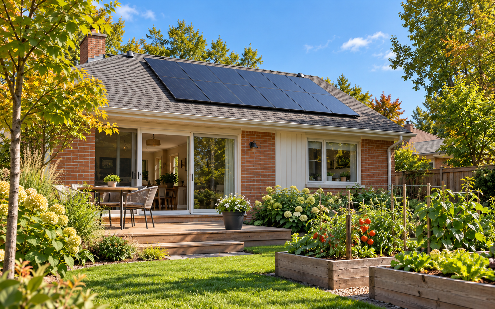

Sustainable Technology A homeowner’s starting point
Is Solar Right for Your Home?
Start with your roof, your shade and the electricity you use. A little preparation can make the next conversation much more useful.

- Region
- Ontario, with Hamilton in mind
- Focus
- Rooftop solar electricity
- Start with
- Your roof records & 12 months of bills
A sunny roof is a promising beginning. Whether solar suits your home also depends on the roof’s condition, the shade it receives, your electricity use and the arrangement for connecting to the grid.
This guide helps you gather the right information before requesting proposals. It focuses on solar photovoltaic (PV) panels, which make electricity. An inverter converts their direct-current output into alternating current used in the home. [1]
01 / Start with the building
Will the roof be ready for the system?
Find the roof’s installation date, repair history and any warranty records. If replacement is approaching, discuss that work before adding panels. Later roofing work may involve removing and reinstalling the solar equipment; ask who would do it and what it would cost. Roof age, shape and slope all belong in the initial assessment. [2][13]
The whole roof is rarely usable panel space. Chimneys, vents, skylights and changes in roof shape affect the layout, as do required access areas. Have the proposed roof area and mounting approach assessed for the installation, including structural suitability and weatherproofing. A photograph alone cannot settle those questions. [3]
What you can gather now
Collect roof records and photos taken from ground level. Note leaks, planned repairs and roof features. Let the people assessing the project arrange any roof access and confirm what drawings or structural review are needed.
02 / Look beyond a sunny afternoon
Where does the light actually fall?
A south-facing roof is often favourable, but it is not the only possible option. Other orientations may work; the relevant question is what the specific roof can produce. Trees and nearby buildings can shade panels, and the pattern changes through the day and the year. [2][3]
Ask for a site-specific shade assessment and a production estimate that includes its losses. Point out trees that are still growing and any known building plans nearby. Request the assumptions in writing so you can compare estimates that may otherwise look equally convincing.
Natural Resources Canada’s solar-resource maps provide regional annual and monthly estimates. They are useful context, but they do not evaluate your roof’s obstructions or replace a site assessment. [5]
03 / Build a useful baseline
Read a year of electricity use
Gather 12 months of bills and record the electricity used in kilowatt-hours (kWh), rather than just the dollars paid. Keep the monthly figures as well as their total. Bills include more than the electricity itself: Ontario delivery charges, for example, include both fixed and usage-related components. [4]
- Identify your distributor and rate plan. Keep a recent bill available when discussing how imports and any exports would be treated.
- Look at timing. If your utility provides hourly or interval data, ask how your daytime use compares with expected solar generation.
- Separate today’s use from future plans. An electric vehicle, a heat pump, a household change or efficiency improvements may change the estimate. Ask for these assumptions to be listed separately.
Consider practical efficiency improvements alongside solar. Reducing electricity demand changes how much generation the home needs; it is useful to understand that baseline before choosing a system size. [2]
04 / Compare like with like
Capacity is not annual production
A proposal should explain these terms and identify where each figure is measured. The inverter connects the panels’ DC output to the home’s AC electrical system. [1]
- kW DC
- The panels’ combined rated power under standard test conditions.
- kW AC
- The inverter’s rated AC power output; it can differ from the panel rating.
- kWh
- An amount of electricity produced or used over time. Ask for estimated monthly and annual AC production.
NRCan expresses mapped PV potential as energy per installed unit of panel capacity. It is an estimate, not a guarantee for a particular home. Ask the installer how orientation, shade, snow and other system losses affect the roof-specific forecast. [5]
Try the figures
Production compared with annual use
Use your annual electricity total and a proposal’s estimated annual AC production. The starting values below are an illustration, not a typical Hamilton home or a system recommendation.
Worked example: 8,000 kWh of annual production ÷ 10,000 kWh of annual use × 100 = 80%.
The interactive comparison becomes available when JavaScript is enabled.
This compares energy totals only. It does not mean the home uses that much solar directly, the bill falls by that percentage, or the system supplies power during an outage. Timing, export rules, rates and remaining charges matter. This worksheet does not estimate savings or payback. [6][12]
05 / Know the arrangement before the price
Understand the Ontario options
Start with the electricity distributor named on your bill. Ask about the connection process, available capacity, technical requirements, metering and potential connection costs. If Alectra is your distributor, use its Connecting Generation guidance. A proposed panel layout is not utility permission to connect. [7]
Have each proposal identify the arrangement it assumes. If comparing these two routes, request a separate explanation of how usable production, any exports, upfront costs and remaining electricity purchases are treated. A rebate and net-metering credits should not be added together in the same forecast when the program excludes that combination.
06 / Put responsibilities in writing
Plan for Hamilton’s approval steps
The City of Hamilton lists solar panels among projects requiring a building permit. Confirm the requirements for your property and proposed work with its Building Division, and identify who will prepare and submit the application. [8]
The electrical process is separate. ESA explains that an electrical notification is not a municipal building permit; a project may need both. Ask for the required electrical notification, inspection process and Certificate of Acceptance to be included in the scope. Utility connection approval is another part of the project. [9][7]
Check the business’s licence
For electrical work you hire out, verify the Licensed Electrical Contractor’s ECRA/ESA licence. A Master Electrician credential alone is not the contractor business licence. The contractor doing the electrical work should file its ESA notification; it should not ask you to file on its behalf. [10]
07 / Be clear about the purpose
Do you also want power during outages?
A standard grid-connected solar system generally shuts down when the grid fails. Solar on the roof does not, by itself, establish that the home has backup power. Outage operation needs a system explicitly designed for it, with suitable inverter and isolation controls and, where included, compatible battery storage. [12]
If backup matters to you, name the loads you want to run: perhaps refrigeration, essential lighting or selected equipment. Ask which circuits the proposed system supports, its available power in kW, its usable stored energy in kWh and the assumptions behind any runtime estimate. A large annual production number cannot answer those questions.
08 / Make proposals comparable
Ask for more than a panel count
Request more than one written proposal. CanREA’s homeowner guide recommends clarifying included components, additional costs, permits, maintenance and warranty support. Use the questions below to build a comparison you can read without a sales presentation. [13]
| Compare | Ask for a written answer |
|---|---|
| Roof & production | What roof work is needed? What are the kW DC, kW AC and monthly AC kWh estimates, with shade and loss assumptions? |
| Complete price | Are taxes, drawings, permits, connection work and any electrical upgrades included? What is excluded? |
| Bill assumptions | Which rate plan and connection arrangement are used? What charges remain? What future rate changes are assumed? |
| Equipment & support | Which models are specified? How do product, performance and workmanship warranties differ? Who handles service and roof-related work? |
| Ownership & payments | Who owns the equipment? What is the total amount payable, including financing or ongoing fees? What happens if you move or end the agreement? |
| Approvals & timing | Who obtains each approval? Are incentives confirmed? When are payments due, and what happens if connection is not approved? |
Questions compiled by PUREARTH using the roof, billing, approval and contractor sources in this guide. Review the actual contract terms and check with your home insurer about the proposed installation. [13]
09 / Leave with a clear next action
Prepare a small information pack
- Your roof’s age, repair records and ground-level photos.
- Twelve months of electricity use, your rate plan and distributor.
- Known shade and any planned changes to the house or electricity use.
- Your priorities: electricity production, budget, backup, or a combination.
- The questions above, sent consistently to each prospective installer.
If roof replacement is close, shade is substantial or connection requirements are unclear, resolve that issue before committing to equipment. If the early information looks promising, a site assessment and comparable written proposals are sensible next steps.
The useful question is whether a particular solar design fits your home and your plans. A well-explained proposal should make that easier to judge.
10 / Common questions
Before you request a quote
Does my roof have to face south?
No. South-facing roofs are often favourable, but other orientations can be suitable. Ask for the expected output of your actual layout, including shade, rather than accepting or rejecting it based on direction alone. [2]
How should I think about winter production?
Ask for a monthly forecast, including snow-loss assumptions. NRCan provides both monthly and annual solar-resource estimates; an annual total should not be read as equal output every month. [5]
If production matches annual use, will the bill be zero?
That energy comparison does not settle the bill. Generation and use occur at different times, the treatment of exports matters, and fixed charges remain. Have the proposal explain the billing arrangement and the charges it expects to change. [4][6]
Does adding a battery guarantee whole-home backup?
No. Ask whether the specific design supports outage operation, which circuits it can supply and for how long under stated conditions. Solar and storage need an appropriate configuration to operate independently of the grid. [12]
Evidence & further reading
Sources behind this guide
Original educational writing by PUREARTH, informed by the primary sources below. Ontario program and local approval pages checked October 18, 2026; confirm current terms before proceeding. U.S. Department of Energy sources are used for technical explanations, not U.S. incentives. The 2019 NRCan and 2024 CanREA guides provide background, not current Ontario program or code requirements.
- U.S. Department of Energy — Solar Integration: Inverters and Grid Services BasicsPV, DC-to-AC conversion and inverter functions.
- U.S. Department of Energy — Homeowner’s Guide to SolarTechnical background on roof age, orientation, shade and electricity demand.
- Natural Resources Canada / CanmetENERGY — Photovoltaic Ready Guidelines, version 2.0 (2019, PDF)Roof layout, obstructions, orientation, mounting and structural considerations; written for new-home readiness.
- Ontario Energy Board — Understanding Your Electricity BillElectricity, delivery and other bill components, including fixed and variable charges.
- Natural Resources Canada — Photovoltaic Potential and Solar Resource Maps of CanadaMapped estimates of monthly and annual PV potential and the units used.
- Ontario Energy Board — Net MeteringBill credits, carry-forward limits, distributor arrangements and ownership agreements.
- Alectra Utilities — Connecting GenerationConnection assessment, forms and requirements for customers in Alectra’s service territory.
- City of Hamilton — Building Permit RequirementsMunicipal permit guidance, including solar panels.
- Electrical Safety Authority — Notifications and InspectionsElectrical notification, inspection and acceptance, distinct from municipal permits.
- Electrical Safety Authority — Finding the Right ContractorLicensed Electrical Contractors, ECRA/ESA licences and responsibility for notifications.
- Home Renovation Savings — Solar Panels and Battery StorageCurrent program eligibility, load-displacement requirement, net-metering exclusion and written pre-approval.
- U.S. Department of Energy — Solar and Resilience BasicsGrid outages and the design needed for solar and storage to provide backup power.
- Canadian Renewable Energy Association — Go Solar Guide (2024, PDF)Industry consumer guidance on roof planning, installer selection, quotes, ownership and insurance. Its historical incentive and rate tables are not used here.